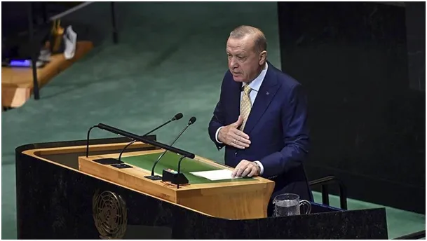

Przerwane, poprzez wyłączenie mikrofonu, przemówienie prezydenta Turcji Recepa Erdoğana w ONZ w sprawie ludobójstwa w Gazie 2025.09.22
Dyrekcja Łączności Prezydenta ogłosiła, że prezydentowi Recepowi Tayyipowi Erdoğanowi nie pozwolono zabrać głosu lub jego przemówienie zostało przerwane na Konferencji Wysokiego Szczebla w sprawie Palestyny.
Poniżej treść przemówienia z tureckich mediów.
"Nikt, kto ma wyrzuty sumienia, nie może zaakceptować tego, co się dzieje; co więcej, nie może milczeć w obliczu takiego ludobójstwa. Celem rządu Netanjahu jest uniemożliwienie utworzenia państwa palestyńskiego i zmuszenie narodu palestyńskiego do ucieczki. W obliczu tych negatywnych wydarzeń, decyzja grupy państw w ONZ o uznaniu państwa palestyńskiego jest decyzją o ogromnym znaczeniu i znaczeniu historycznym.
Chcielibyśmy, żeby Mahmud Abbas był dziś z nami. Uważam za niezwykle cenne, że wszyscy mówcy dzisiaj są również głosem narodu palestyńskiego. Sprawa palestyńska stała się dziś globalnym fenomenem.
Udział w tej sali jest tego najlepszym dowodem. W Europie, Azji, Ameryce i Afryce jesteśmy świadkami niespotykanych dotąd krzyków o wolną Palestynę, dochodzących z ulic, mediów społecznościowych i prasy. Ten paradoks nie powinien umknąć uwadze nikogo, w tym moich przyjaciół. Rząd Netanjahu, który dąży do samozniszczenia poprzez okrucieństwo Holokaustu, uciska swoich sąsiadów, z którymi dzieli tę samą ziemię, powietrze i wodę.
Społeczność międzynarodowa musi położyć kres ekspansjonizmowi na Zachodnim Brzegu i faktom dokonanym we Wschodniej Jerozolimie, a także próbom szerzenia niestabilności w regionie. W przeciwnym razie nie będzie można dłużej dyskutować o porządku międzynarodowym i uniwersalnych wartościach. Cel tej polityki jest jasny: zniszczyć rozwiązanie dwupaństwowe i pozbawić państwo palestyńskie realnych podstaw. Na to nigdy nie można pozwolić.
Mam nadzieję, że kraje, które na tej konferencji wykazały się odwagą, uznając Państwo Palestyńskie, poparły swoje historyczne stanowisko. Należy ogłosić zawieszenie broni, umożliwić niezakłócony napływ pomocy humanitarnej do Strefy Gazy, a Izrael musi wycofać swoje siły zbrojne z Gazy."
Za halktv-com-tr
Paweł Klimczewski